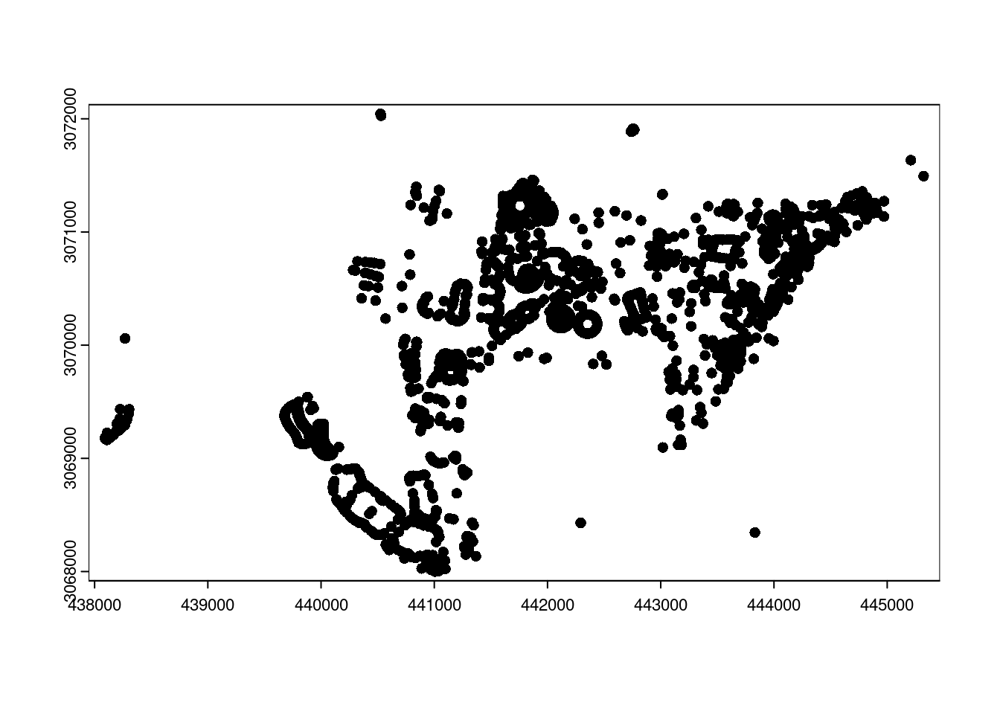
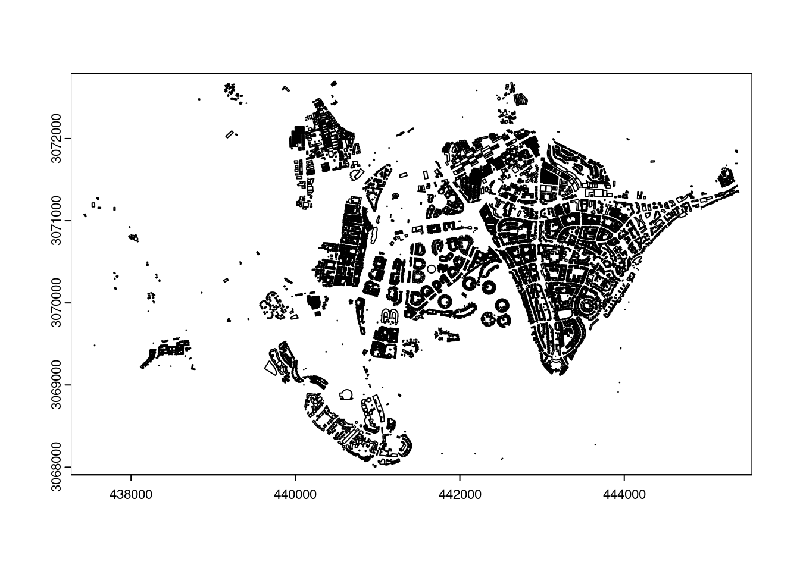
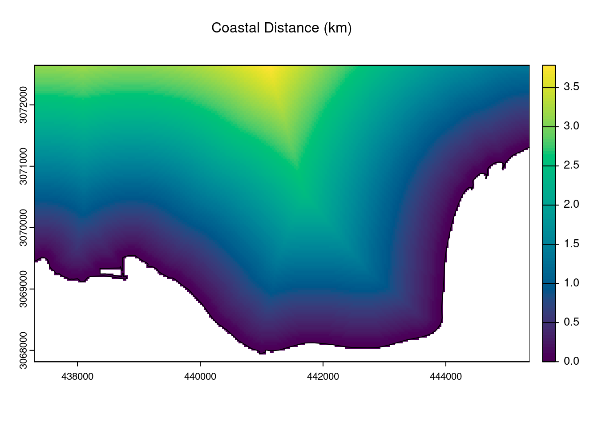
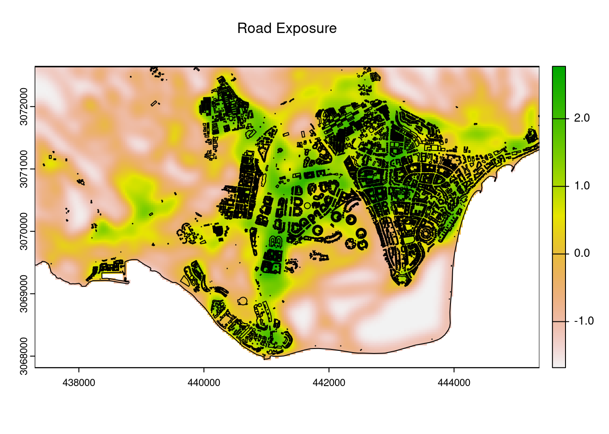
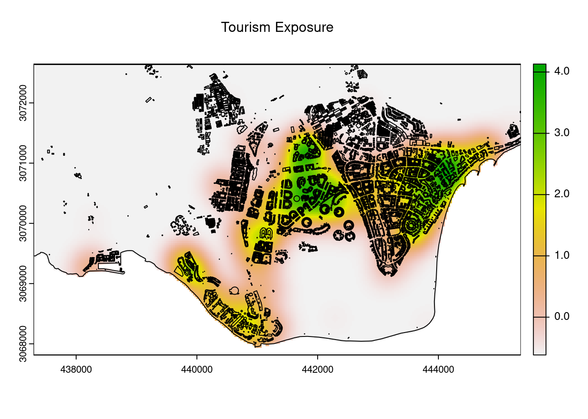
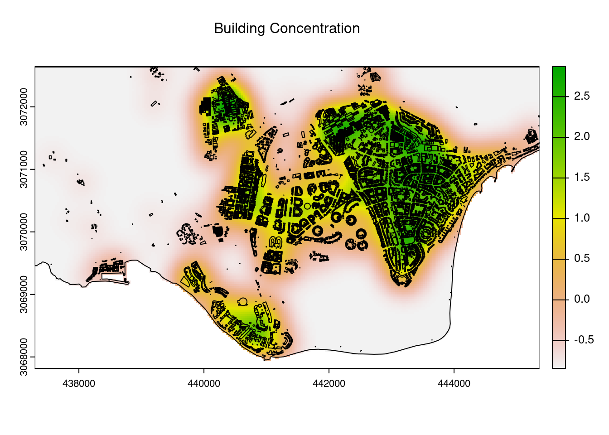
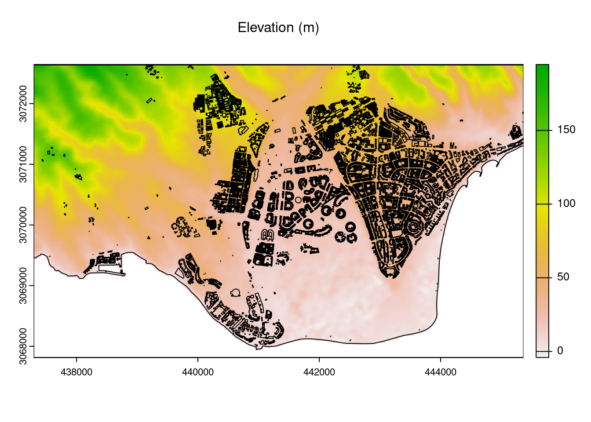

# load packages
library(tidyverse)
library(terra)
library(RColorBrewer)
library(sf)
library(leaflet)
library(osmdata)Control Variables
Introduction
Here the various control variables are determined
Loading Data
The first step is to load one Landsat 8 raster for extracting the CRS which will be needed for formatting the data from OSM and other sources like the STRM elevation map.
# load one raster, for use as crs
b2 = rast("landsat_july/B2.TIF")Loading Coast Shapefile
Using OSM Data to first extract a coastline of the island, this process enables such analysis as calculating distance from the coastline
# query osm
gran_canaria_query = opq(bbox = "Gran Canaria") %>%
add_osm_feature(key = "place", value = "island") %>%
osmdata_sf()
# extract the coast data
gran_canaria_sf = gran_canaria_query$osm_multipolygons
# make spatial vector
gran_canaria_vect = st_transform(gran_canaria_sf, crs(b2)) %>%
vect()Loading Road Shapefile
Again using OSM data, it is possible to extract road data in the form of a spatial vector.
# define bbox
bbox_osm = c(-15.636205673397361,
27.73337624747081,
-15.554409027542757,
27.777126576546703)
# query osm
osm_roads = opq(bbox = bbox_osm) %>%
add_osm_feature(key = "highway") %>%
osmdata_sf()
# extract road lines
roads_vect = st_transform(osm_roads$osm_lines, crs(b2)) %>%
vect()Loading Tourism Shapefile
# query osm
osm_tourism = opq(bbox = bbox_osm) %>%
add_osm_feature(key = "tourism") %>%
osmdata_sf()
# extract tourism points
tourism_vect = st_transform(osm_tourism$osm_points, crs(b2)) %>%
vect()
plot(tourism_vect)
Loading Building Shapefile
# query osm
osm_building = opq(bbox = bbox_osm) %>%
add_osm_feature(key = "building") %>%
osmdata_sf()
# extract building polygons
building_vect = st_transform(osm_building$osm_polygons, crs(b2)) %>%
vect()
plot(building_vect)
Calculating Distance from Ocean
In terms of other environmental variables, there is also distance from the coast to consider, calculated using OSM coastline data.
# create blank template
bbox = ext(c(437292.6282,445376.8775,3067829.6809,3072637.1023))
template = crop(rast("landsat_july/B1.TIF"), bbox)
# crop sp by bbox
gran_canaria_vect = crop(gran_canaria_vect, bbox)
# create land raster
sea_mask = rasterize(gran_canaria_vect,
template,
NA,
background=1)
# calc distance and plot
coastdistance = distance(sea_mask) %>%
mask(gran_canaria_vect) / 1000
terra::plot(coastdistance, col = hcl.colors(100))
plot(gran_canaria_vect, add = TRUE)
mtext(text="Coastal Distance (km)", side=3, line=2)
Calculating Road Heatmap
Furthermore, there is distance from the nearest road, again calculated using OSM data.
# create road raster
road_mask = rasterize(roads_vect,
template,
1,
background=NA)
road_kernal = focalMat(road_mask, 100, "Gauss")
road_heat = focal(road_mask, road_kernal,
fun = sum, na.rm = TRUE)
road_heat[is.na(road_heat)] = 0
road_heat = road_heat %>%
mask(gran_canaria_vect) %>%
scale()
plot(road_heat)
plot(gran_canaria_vect, add = TRUE)
plot(building_vect, add = TRUE)
mtext(text="Road Exposure", side=3, line=2)
Calculating Tourism Exposure
Furthermore, there the effect of exposure to tourism, modelled here using a heatmap, again calculated using OSM data.
# create tourism raster
tourism_mask = rasterize(tourism_vect,
template,
1,
background=NA)
# create heatmap
tourism_kernal = focalMat(tourism_mask, 200, "Gauss")
tourism_heat = focal(tourism_mask, tourism_kernal,
fun = sum, na.rm = TRUE)
tourism_heat[is.na(tourism_heat)] = 0
tourism_heat = tourism_heat %>%
mask(gran_canaria_vect) %>%
scale()
# plot
plot(tourism_heat)
plot(gran_canaria_vect, add = TRUE)
plot(building_vect, add = TRUE)
mtext(text="Tourism Exposure", side=3, line=2)
Calculating Building Footprint Heatmap
# create buidling raster
building_mask = rasterize(building_vect,
template,
1,
background=NA)
# create heatmap
building_kernal = focalMat(building_mask, 199, "Gauss")
building_heat = focal(building_mask, building_kernal,
fun = sum, na.rm = TRUE)
building_heat[is.na(building_heat)] = 0
building_heat = building_heat %>%
mask(gran_canaria_vect) %>%
scale()
plot(building_heat)
plot(gran_canaria_vect, add = TRUE)
plot(building_vect, add = TRUE)
mtext(text="Building Concentration", side=3, line=2)
Calculating Elevation
Load in 30m resolution from STRM project. The processing steps here are just to plot and visualise it with a custom colour scale.
# load elevation raster, resample, and crop
strm = rast("strm/strm.tif") %>%
project(crs(b2)) %>%
resample(b2, method = "bilinear") %>%
crop(bbox) %>%
mask(gran_canaria_vect)
# plot
plot(strm)
plot(gran_canaria_vect, add = TRUE)
plot(building_vect, add = TRUE)
mtext(text="Elevation (m)", side=3, line=2)
Stack and Export
control_stack = c(coastdistance, tourism_heat, building_heat,
road_heat, strm)
data_df = na.omit(as.data.frame(control_stack, xy=TRUE))
names(data_df) = c("X", "Y",
"CoastDistance","TourismExposure",
"BuildingExposure", "RoadExposure", "Elevation")
write_csv(data_df, "control_variables.csv")